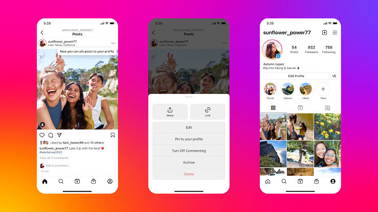

home
why learn to code
why learn to code
Coding is like having a superpower that allows you to bring your creative ideas to life. You can build your own games, websites, or apps, making your imagination a reality. Creating a mobile app that uses GPS data to help users find the nearest charging station for electric vehicles, addressing a common problem for eco-conscious drivers coding skills empower individuals to create innovative solutions, such as mobile apps that streamline tasks, websites that enhance user experiences, and software that addresses real-world problems.
Instagram :

Instagram recommends videos based on the similarity of content to what a user has interacted with previously. Instagram uses coding for image recognition to enable features like automatic tagging and content moderation.
Whatsapp :

WhatsApp's end-to-end encryption involves sophisticated coding to ensure the security and privacy of user messages by encrypting them in transit, making them visible only to the intended recipients.
Freefire :

In Free Fire, coding is primarily utilized by game developers for tasks such as implementing new features, optimizing performance, addressing bugs and glitches, ensuring server-side functionalities, and overall game maintenance.
Snapchat :
Snapchat's AR lenses involve complex coding for facial recognition and tracking, allowing users to apply interactive and dynamic augmented reality effects in real time.
Netflix :

The recommendation algorithm used by Netflix involves complex coding for machine learning models, analyzing user behavior, and providing personalized content recommendations to enhance the streaming experience.
Amazon :

The development of Amazon Alexa involves sophisticated coding to enable natural language processing, voice recognition, and integration with various smart home devices for seamless user interactions.
Tesla :

Tesla's Autopilot is an advanced driver-assistance system that utilizes complex coding and machine-learning algorithms to enable features like autonomous driving and automated lane-keeping.
Mark Zuckerberg :

- Mark Zuckerberg is the co-founder and CEO of Facebook. He started coding at a young age and developed the initial version of Facebook while studying at Harvard University. Mark Zuckerberg have involved in many startups like Facebook (2004), Instagram (2012), WhatsApp (2014), Internet.org (2013), Oculus VR (2014), and Chan Zuckerberg Initiative (2015).
- He started coding at a young age and developed the initial version of Facebook while studying at Harvard University.
Bill Gates :

- Bill Gates, the co-founder of Microsoft, is a pioneer in the software industry. Bill Gates is a visionary entrepreneur who boldly decided to leave Harvard and pursue his passion for software development, ultimately changing the course of technology history.
- Bill Gates developed an early interest in computers and programming during his teenage years. In 1968, at the age of 13, Gates attended Lakeside School in Seattle, where he gained access to a teletype terminal connected to a mainframe computer.
N. R. Narayana Murthy :

- N. R. Narayana Murthy achieved immense success as the co-founder of Infosys, pioneering India's IT industry growth. Under his leadership, Infosys became a global IT services giant known for quality, transparency, and ethical practices.
- Bill Gates developed an early interest in computers and programming during his teenage years. In 1968, at the age of 13, Gates attended Lakeside School in Seattle, where he gained access to a teletype terminal connected to a mainframe computer.
- N. R. Narayana Murthy learned coding during his academic years. He earned a bachelor's degree in electrical engineering from the National Institute of Engineering, Mysuru, and later pursued a master's degree in electrical engineering from the Indian Institute of Technology (IIT) Kanpur.
Sundar Pichai :

- Sundar Pichai is the CEO of Alphabet Inc., Google's parent company. Sundar Pichai is an engineer who played a key role in the development of Google Chrome.
- Sundar Pichai began learning coding during his undergraduate studies at the Indian Institute of Technology (IIT) Kharagpur, where he pursued a degree in Metallurgical Engineering.
Nandan Nilekani :

- Nandan Nilekani is the Co-founder of Infosys and the architect of India's Aadhaar system. He also served as the Chairman of the Unique Identification Authority of India (UIDAI) Nandan Nilekani co-founded Infosys, a leading IT services company.
- Nandan Nilekani learned coding during his college years at the Indian Institute of Technology (IIT) Bombay.